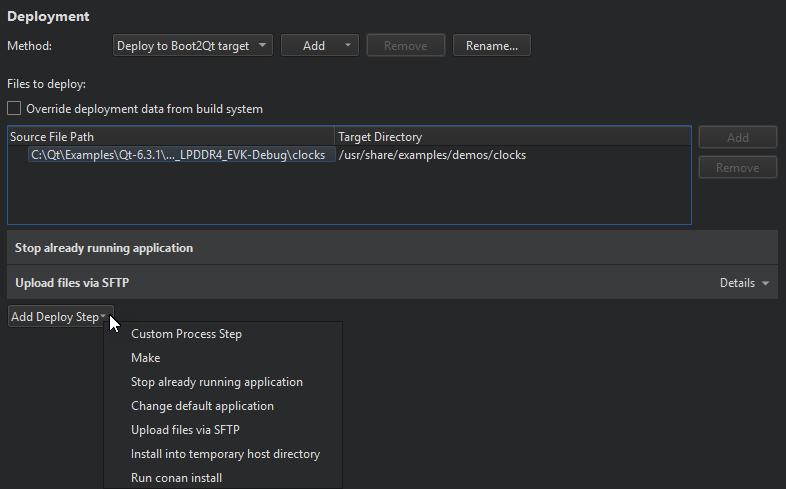

Boot to Qt Deploy Configuration
Specify settings for deploying applications to Boot to Qt devices in the project configuration file and in Projects > Deploy Settings.

The deployment process is described in more detail in Remote Linux Deploy Configuration.
Launching Applications on Boot
To have your application launch on boot, select Add Deploy Step > Change default application > Set this application to start by default.
See also How To: Build and Run, How To: Develop for Boot to Qt, Boot to Qt Run Settings, and Developing for Boot to Qt Devices.